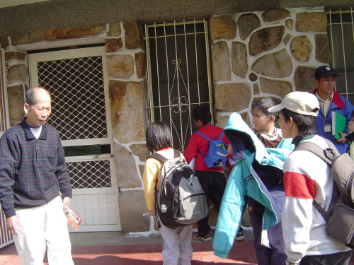

石頭厝
此地早年都是茶園(東邦紅茶)，約五十年前建了石頭厝，此屋本是由美國人蓋，一位神父入住，二十八、九年前許氏夫婦自外地遷入，即現今主人。
從前西側是紅磚牆醫院，土地所有權原是神父的，許氏夫婦遷入時，醫院已拆除，有人將地買下，改建為社區民房。
早期石頭屋稱「瑪莉亞產房」(1956~1970)，是提供山上送下山的產婦待產之所，要生時再送往埔基。當時居民經過此處，常會看到大肚便便的婦女在花園中散步。
此地早年都是茶園(東邦紅茶)，約五十年前建了石頭厝，此屋本是由美國人蓋，一位神父入住，二十八、九年前許氏夫婦自外地遷入，即現今主人。
從前西側是紅磚牆醫院，土地所有權原是神父的，許氏夫婦遷入時，醫院已拆除，有人將地買下，改建為社區民房。
早期石頭屋稱「瑪莉亞產房」(1956~1970)，是提供山上送下山的產婦待產之所，要生時再送往埔基。當時居民經過此處，常會看到大肚便便的婦女在花園中散步。